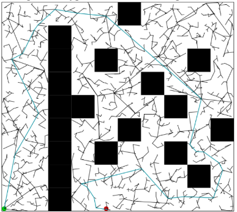
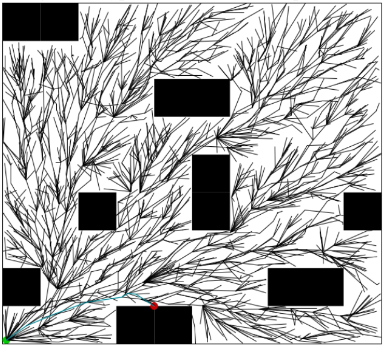
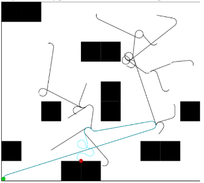
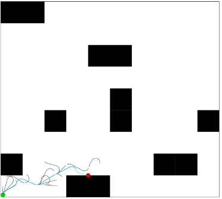

RRT*
My final project for the senior level AI course at the University of New Hampshire, and self developed. The project evaluates the optimization of motion planning for an agent that exists in a 2d, continuous environment. The Rapidly Exploring Random Tree (RRT*) algorithm uses random samples of the environment to generate a path from the start node to the solution. RRT* is an optimization that rewires nodes to create shorter and more logical paths.
This was written is Python and a simple Bash script was used to run trials of the algorithm. A formal write-up is available here , in AAAI format.
 Above is a typical RRT exploration tree vs a typical RRT* exploration tree.
The RRT algorithm takes random samples of its environment and wires them together to generate paths from start to finish. While this is suitable for some uses, the paths generated are often illogical, and real-world applications may depend of shorter, more sensible paths.
RRT* produces more optimal solutions by wiring nodes not based on their nearest neighbors, but by the total length from start. This hueristic creates more optimal paths
Dubins' Vehicles
This project evaluates the tradeoffs between performance and solution quality between RRT and RRT*. Additionally, the tradeoff is evaluated for agents whose motion is guided by a minimum turning radius (cars, bicycle, boats). The findings where that the RRT* optimization holds true for Dubins vehicles.
Below is a typical Dubins RRT result vs the RRT* optimization
 